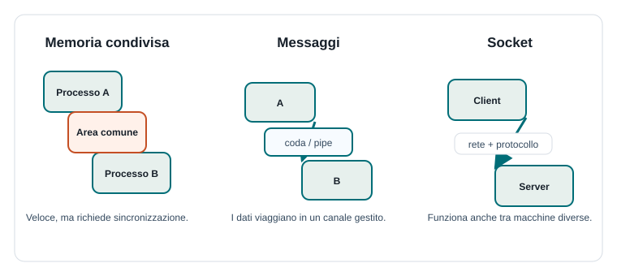

Capitoletto 4
Comunicazione tra processi
Le attività concorrenti spesso devono scambiarsi informazioni. La comunicazione tra processi, chiamata anche IPC, comprende i meccanismi con cui processi o thread collaborano senza confondere dati, responsabilità e tempi di esecuzione.
Obiettivi della lezione
- Definire l'Inter-Process Communication.
- Confrontare memoria condivisa e scambio di messaggi.
- Capire a che cosa servono pipe, code di messaggi e socket.
- Distinguere comunicazione locale e comunicazione remota.
- Scegliere un meccanismo IPC in base al problema.
Che cos'è l'IPC
IPC significa Inter-Process Communication, cioè comunicazione tra processi. Due processi hanno normalmente spazi di memoria separati: questo aumenta isolamento e sicurezza, ma rende necessario un canale controllato per scambiare dati.
Anche i thread, pur condividendo memoria, hanno bisogno di regole di comunicazione. La comunicazione non riguarda solo il trasferimento di byte: riguarda anche il coordinamento, cioè sapere quando un dato è pronto, chi lo può usare e che cosa succede se qualcosa fallisce.
Tre modelli principali

| Modello | Idea | Punto di attenzione |
|---|---|---|
| Memoria condivisa | Più processi accedono a una stessa area dati. | Richiede sincronizzazione accurata. |
| Messaggi | I dati viaggiano in pipe o code gestite dal sistema. | Bisogna definire formato e ordine dei messaggi. |
| Socket | I processi comunicano tramite rete o interfaccia locale. | Servono protocolli, gestione di errori e timeout. |
Memoria condivisa
La memoria condivisa permette a processi diversi di leggere e scrivere una stessa area di memoria. È veloce perché evita di copiare continuamente grandi quantità di dati, ma proprio per questo è rischiosa: chi legge deve sapere quando il dato è valido e chi scrive deve evitare modifiche simultanee.
Processo A:
wait(mutex)
scrive dati nell'area condivisa
signal(mutex)
signal(dato_pronto)
Processo B:
wait(dato_pronto)
wait(mutex)
legge dati dall'area condivisa
signal(mutex)La memoria condivisa è adatta quando i processi devono scambiare molti dati sulla stessa macchina, per esempio immagini, buffer audio o grandi strutture numeriche.
Pipe e code di messaggi
Una pipe è un canale attraverso cui un processo scrive dati e un altro li legge. Spesso funziona come un flusso ordinato: ciò che entra prima viene letto prima. È utile per collegare programmi semplici, come nei comandi da terminale.
Una coda di messaggi conserva messaggi separati, spesso con un tipo, una priorità o un destinatario. Riduce la necessità di condividere direttamente memoria: i processi si scambiano pacchetti informativi e il sistema gestisce l'attesa.
| Meccanismo | Come comunica | Esempio |
|---|---|---|
| Pipe | Flusso di byte da produttore a consumatore. | Un programma genera righe e un altro le filtra. |
| Coda di messaggi | Messaggi distinti inseriti e prelevati. | Un servizio riceve richieste di elaborazione. |
| Eventi | Notifiche che indicano un cambiamento. | Un thread avvisa che un download è terminato. |
Socket e comunicazione remota
Un socket permette a due processi di comunicare anche se si trovano su macchine diverse. È la base di molte applicazioni di rete: browser e server web, chat, giochi online, sistemi client-server e servizi distribuiti.
Quando la comunicazione passa sulla rete compaiono nuovi problemi: latenza, pacchetti persi, connessioni interrotte, formati non compatibili, sicurezza e autenticazione. Per questo i socket sono collegati ai protocolli, cioè regole condivise sul formato e sul significato dei messaggi.
Client:
apre una connessione al server
invia una richiesta
attende una risposta
chiude la connessione
Server:
ascolta su una porta
accetta una connessione
legge la richiesta
invia la rispostaSincrono e asincrono
Una comunicazione è sincrona quando chi invia resta in attesa della risposta o della ricezione. È semplice da ragionare, ma può bloccare l'attività chiamante. Una comunicazione è asincrona quando l'invio non obbliga ad aspettare subito il risultato: il programma potrà riceverlo più tardi tramite evento, callback, promessa o coda.
| Tipo | Vantaggio | Svantaggio |
|---|---|---|
| Sincrona | Sequenza chiara e facile da seguire. | Può bloccare se l'altra parte è lenta. |
| Asincrona | Migliora reattività e scalabilità. | Richiede gestione di eventi, stati e possibili errori. |
Come scegliere il meccanismo giusto
La scelta dipende dal contesto. Se i processi sono sulla stessa macchina e devono scambiare molti dati, la memoria condivisa può essere efficiente. Se è più importante isolare le parti e semplificare il controllo, conviene usare messaggi. Se le attività sono su macchine diverse, servono socket o protocolli di rete più adatti.
| Domanda | Scelta probabile |
|---|---|
| I processi sono sulla stessa macchina? | Memoria condivisa, pipe o code. |
| Devono scambiare grandi quantità di dati? | Memoria condivisa con sincronizzazione. |
| Serve separare bene produttori e consumatori? | Coda di messaggi. |
| I processi sono su macchine diverse? | Socket e protocollo applicativo. |
| La risposta può arrivare più tardi? | Comunicazione asincrona. |
Esempio guidato: gestione compiti online
In una piattaforma scolastica, il browser dello studente invia un compito al server. Il server salva il file, mette un messaggio in coda per l'antivirus, aggiorna il database e invia una notifica al docente. Non tutto deve accadere nello stesso istante.
- Browser e server comunicano tramite socket e protocollo HTTPS.
- Il server salva il file in modo controllato.
- Una coda invia il compito a un processo di scansione.
- Il database memorizza stato, autore e data di consegna.
- Un evento o messaggio avvisa il docente quando il controllo è terminato.
Esercizi guidati
- Confronta memoria condivisa e coda di messaggi usando due vantaggi e due rischi.
- Descrivi una comunicazione client-server presente in un sito che usi spesso.
- Spiega perché una comunicazione sincrona può rendere lenta un'interfaccia grafica.
- Progetta un piccolo sistema con un produttore, una coda e due consumatori.
Domande con risposta semplice
Perché processi diversi non condividono automaticamente la memoria?
Per isolamento e sicurezza. Ogni processo ha il proprio spazio di memoria, così un errore non modifica facilmente i dati di un altro processo.
Quando conviene usare una coda di messaggi?
Quando si vuole separare chi produce lavoro da chi lo esegue, mantenendo messaggi ordinati e gestiti dal sistema.
Che differenza c'è tra pipe e socket?
Una pipe collega processi, di solito sulla stessa macchina, tramite un flusso. Un socket può collegare processi anche su macchine diverse attraverso la rete.
Per ripassare
IPC significa comunicazione controllata tra attività. Ricorda tre famiglie: memoria condivisa quando conta la velocità, messaggi quando conta il disaccoppiamento, socket quando la comunicazione passa anche attraverso la rete.